## Rows: 70 Columns: 6
## ── Column specification ────────────────────────────────────────────────────────
## Delimiter: ","
## chr (1): borough
## dbl (5): year, pm25_annual, pm25_summer, pm25_winter, asthma_rate
##
## ℹ Use `spec()` to retrieve the full column specification for this data.
## ℹ Specify the column types or set `show_col_types = FALSE` to quiet this message.## Rows: 70
## Columns: 6
## $ year <dbl> 2023, 2023, 2023, 2023, 2023, 2022, 2022, 2022, 2022, 2022…
## $ borough <chr> "Manhattan", "Bronx", "Brooklyn", "Queens", "Staten Island…
## $ pm25_annual <dbl> 7.3, 6.9, 6.7, 6.6, 6.2, 7.0, 6.1, 5.8, 5.7, 5.2, 7.4, 6.6…
## $ pm25_summer <dbl> 9.3, 9.3, 8.8, 8.8, 8.4, 7.5, 7.1, 6.3, 6.4, 5.8, 9.4, 8.5…
## $ pm25_winter <dbl> 7.2, 6.6, 6.3, 6.1, 5.5, 7.9, 7.3, 6.9, 6.7, 6.1, 7.5, 6.9…
## $ asthma_rate <dbl> 54.3, 136.4, 63.0, 38.6, 41.1, 50.6, 121.9, 55.2, 31.6, 36…ggplot(merged, aes(x = pm25_annual, y = asthma_rate, color = borough)) +
geom_point(size = 3, alpha = 0.8) +
geom_smooth(method = "lm", se = FALSE) +
labs(
title = "Relationship Between PM2.5 Levels and Asthma ED Visit Rate",
x = "Annual PM2.5 (mcg/m3)",
y = "Asthma ED Visit Rate per 10,000",
color = "Borough"
) +
theme_minimal(base_size = 14)## `geom_smooth()` using formula = 'y ~ x'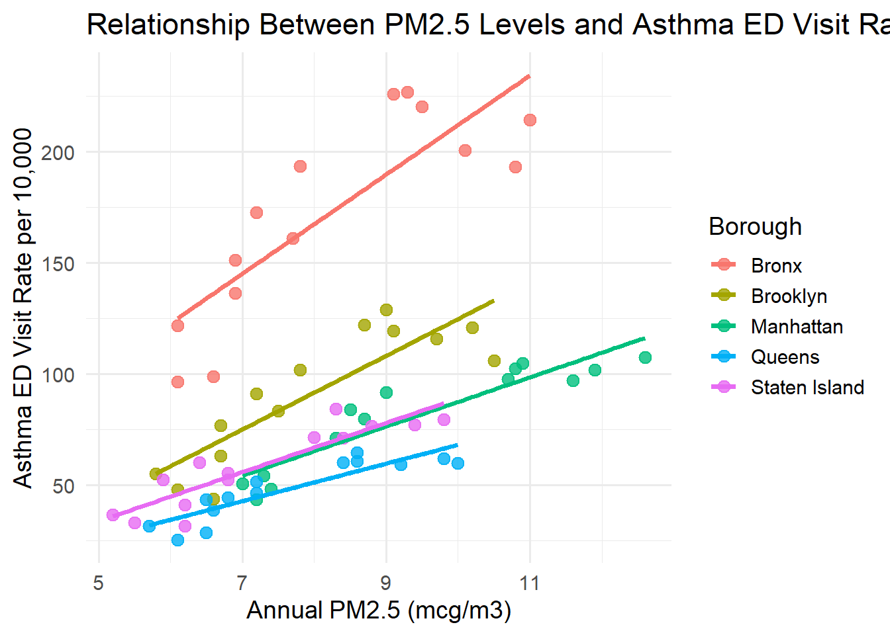
season_data <- merged %>%
pivot_longer(
cols = c(pm25_summer, pm25_winter),
names_to = "season",
values_to = "pm25"
) %>%
mutate(
season = case_when(
season == "pm25_summer" ~ "Summer",
season == "pm25_winter" ~ "Winter"
)
)
season_data %>%
ggplot(aes(x = season, y = pm25, fill = season)) +
geom_col() +
facet_wrap(~ borough) +
labs(
title = "Seasonal PM2.5 Levels by Borough",
x = "Season",
y = "PM2.5 (mcg/m3)"
) +
theme_minimal(base_size = 14)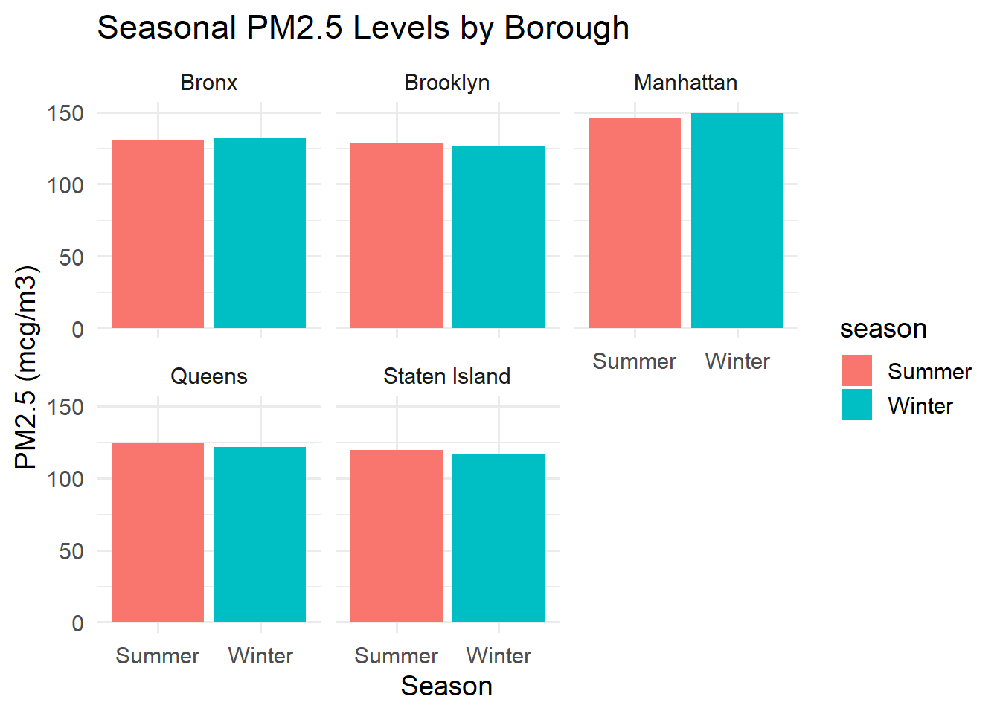
ggplot(merged, aes(x = year, y = pm25_annual, color = borough, group = borough)) +
geom_line(size = 1) +
geom_point(size = 2) +
labs(
title = "Annual PM2.5 Levels Over Time by Borough",
x = "Year",
y = "Annual PM2.5 (mcg/m3)",
color = "Borough"
) +
theme_minimal(base_size = 14)## Warning: Using `size` aesthetic for lines was deprecated in ggplot2 3.4.0.
## ℹ Please use `linewidth` instead.
## This warning is displayed once every 8 hours.
## Call `lifecycle::last_lifecycle_warnings()` to see where this warning was
## generated.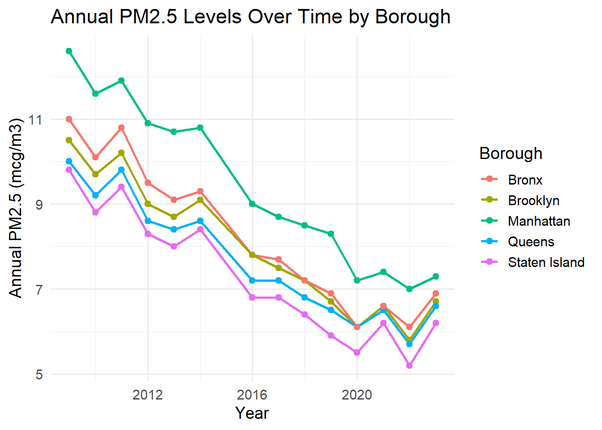
ggplot(merged, aes(x = year, y = asthma_rate, color = borough, group = borough)) +
geom_line(size = 1) +
geom_point(size = 2) +
labs(
title = "Asthma ED Visit Rates Over Time by Borough",
x = "Year",
y = "Asthma ED Visit Rate per 10,000",
color = "Borough"
) +
theme_minimal(base_size = 14)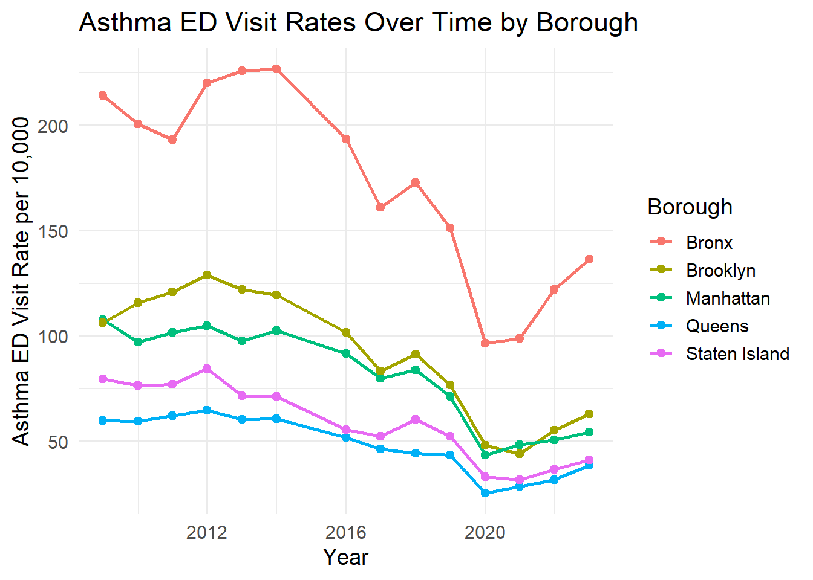
ggplot(merged, aes(x = year, y = pm25_annual, color = borough)) +
geom_line(size = 1) +
facet_wrap(~ borough) +
labs(
title = "Annual PM2.5 Levels Over Time by Borough",
x = "Year",
y = "Annual PM2.5 (mcg/m3)"
) +
theme_minimal(base_size = 14) +
theme(legend.position = "none")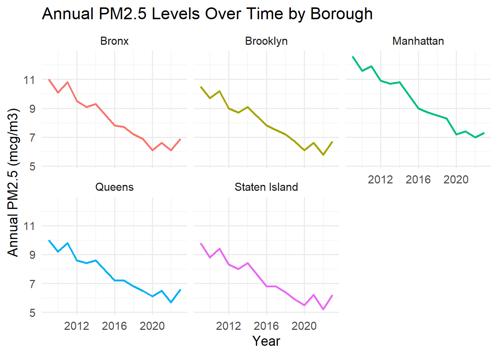
ggplot(merged, aes(x = year, y = asthma_rate, color = borough)) +
geom_line(size = 1) +
facet_wrap(~ borough) +
labs(
title = "Asthma ED Visit Rates Over Time by Borough",
x = "Year",
y = "Asthma ED Visit Rate per 10,000"
) +
theme_minimal(base_size = 14) +
theme(legend.position = "none")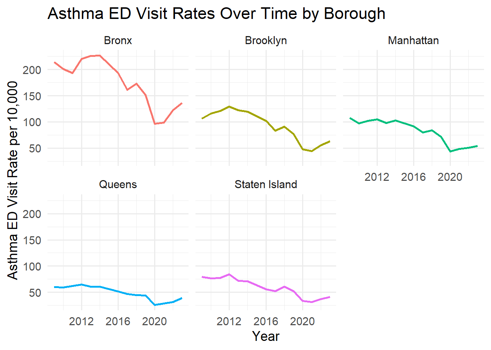
heat_data <- merged %>%
select(borough, pm25_summer, pm25_winter) %>%
pivot_longer(
cols = c(pm25_summer, pm25_winter),
names_to = "season",
values_to = "pm25"
) %>%
mutate(
season = case_when(
season == "pm25_summer" ~ "Summer",
season == "pm25_winter" ~ "Winter"
)
)
ggplot(heat_data, aes(x = season, y = borough, fill = pm25)) +
geom_tile(color = "white") +
scale_fill_viridis_c() +
labs(
title = "PM2.5 Heatmap: Season × Borough",
x = "Season",
y = "Borough",
fill = "PM2.5"
) +
theme_minimal(base_size = 14)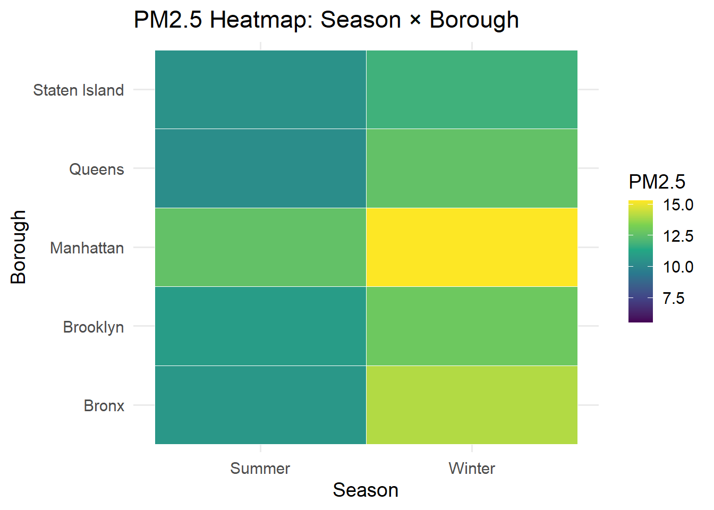
ggplot(merged, aes(x = year, y = pm25_annual, color = borough)) +
geom_line(size = 1) +
geom_point() +
facet_wrap(~ borough) +
labs(
title = "Annual PM2.5 Levels Over Time (Faceted by Borough)",
x = "Year",
y = "Annual PM2.5 (mcg/m3)"
) +
theme_minimal(base_size = 14)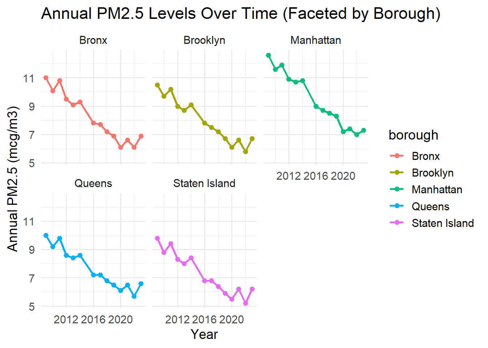
ggplot(merged, aes(x = year, y = asthma_rate, color = borough)) +
geom_line(size = 1) +
geom_point() +
facet_wrap(~ borough) +
labs(
title = "Asthma ED Visit Rates Over Time (Faceted by Borough)",
x = "Year",
y = "Asthma ED Visit Rate per 10,000"
) +
theme_minimal(base_size = 14)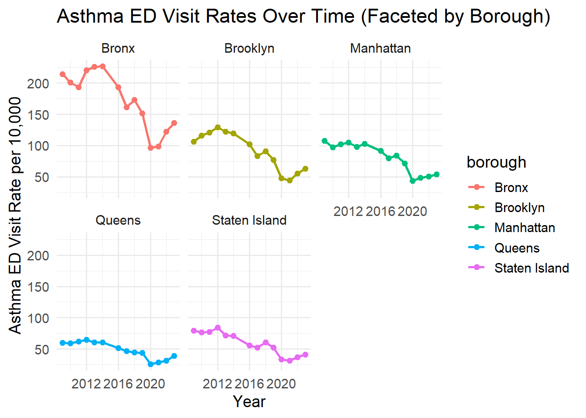 ## Heatmap of PM2.5 Levels (Year × Borough)
ggplot(merged, aes(x = year, y = borough, fill = pm25_annual)) +
geom_tile(color = "white") +
scale_fill_viridis_c(option = "plasma") +
labs(
title = "Heatmap of Annual PM2.5 Levels",
x = "Year",
y = "Borough",
fill = "PM2.5"
) +
theme_minimal(base_size = 14)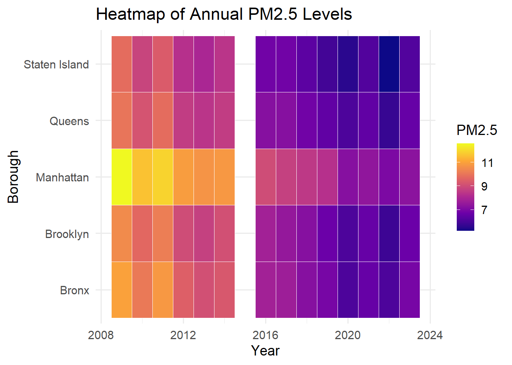
ggplot(merged, aes(x = year, y = borough, fill = asthma_rate)) +
geom_tile(color = "white") +
scale_fill_viridis_c(option = "magma") +
labs(
title = "Heatmap of Asthma ED Visit Rates",
x = "Year",
y = "Borough",
fill = "ED Rate"
) +
theme_minimal(base_size = 14)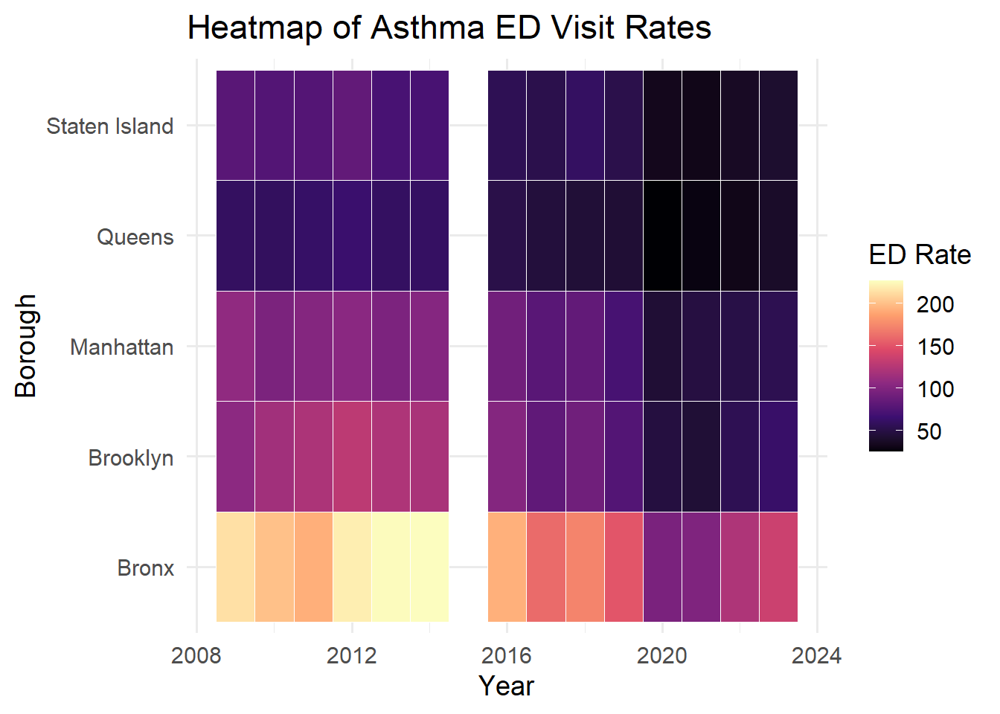 # Statistical Modeling
In this section, we fit three regression models to evaluate the association between PM2.5 levels and asthma emergency department (ED) visit rates across NYC boroughs.
We evaluate assumptions, interpret coefficients, and discuss public health implications.
##
## Call:
## lm(formula = asthma_rate ~ pm25_annual + borough + year, data = merged)
##
## Residuals:
## Min 1Q Median 3Q Max
## -50.321 -8.297 -0.104 7.756 41.247
##
## Coefficients:
## Estimate Std. Error t value Pr(>|t|)
## (Intercept) 5037.803 2973.245 1.694 0.0951 .
## pm25_annual 7.521 4.138 1.818 0.0739 .
## boroughBrooklyn -79.341 6.282 -12.631 <2e-16 ***
## boroughManhattan -100.368 7.940 -12.641 <2e-16 ***
## boroughQueens -119.784 6.621 -18.091 <2e-16 ***
## boroughStaten Island -106.387 7.354 -14.467 <2e-16 ***
## year -2.444 1.459 -1.675 0.0988 .
## ---
## Signif. codes: 0 '***' 0.001 '**' 0.01 '*' 0.05 '.' 0.1 ' ' 1
##
## Residual standard error: 16.39 on 63 degrees of freedom
## Multiple R-squared: 0.9092, Adjusted R-squared: 0.9005
## F-statistic: 105.1 on 6 and 63 DF, p-value: < 2.2e-16Asthma ED visit rates are counts per 10,000 and may follow a Poisson-like distribution.
##
## 载入程序包：'MASS'## The following object is masked from 'package:dplyr':
##
## select## Warning in dpois(y, mu, log = TRUE): non-integer x = 54.300000## Warning in dpois(y, mu, log = TRUE): non-integer x = 136.400000## Warning in dpois(y, mu, log = TRUE): non-integer x = 38.600000## Warning in dpois(y, mu, log = TRUE): non-integer x = 41.100000## Warning in dpois(y, mu, log = TRUE): non-integer x = 50.600000## Warning in dpois(y, mu, log = TRUE): non-integer x = 121.900000## Warning in dpois(y, mu, log = TRUE): non-integer x = 55.200000## Warning in dpois(y, mu, log = TRUE): non-integer x = 31.600000## Warning in dpois(y, mu, log = TRUE): non-integer x = 36.500000## Warning in dpois(y, mu, log = TRUE): non-integer x = 48.200000## Warning in dpois(y, mu, log = TRUE): non-integer x = 43.900000## Warning in dpois(y, mu, log = TRUE): non-integer x = 28.600000## Warning in dpois(y, mu, log = TRUE): non-integer x = 98.900000## Warning in dpois(y, mu, log = TRUE): non-integer x = 31.600000## Warning in dpois(y, mu, log = TRUE): non-integer x = 43.500000## Warning in dpois(y, mu, log = TRUE): non-integer x = 25.400000## Warning in dpois(y, mu, log = TRUE): non-integer x = 96.500000## Warning in dpois(y, mu, log = TRUE): non-integer x = 33.200000## Warning in dpois(y, mu, log = TRUE): non-integer x = 71.100000## Warning in dpois(y, mu, log = TRUE): non-integer x = 151.300000## Warning in dpois(y, mu, log = TRUE): non-integer x = 76.700000## Warning in dpois(y, mu, log = TRUE): non-integer x = 43.500000## Warning in dpois(y, mu, log = TRUE): non-integer x = 52.300000## Warning in dpois(y, mu, log = TRUE): non-integer x = 91.200000## Warning in dpois(y, mu, log = TRUE): non-integer x = 172.800000## Warning in dpois(y, mu, log = TRUE): non-integer x = 44.400000## Warning in dpois(y, mu, log = TRUE): non-integer x = 60.200000## Warning in dpois(y, mu, log = TRUE): non-integer x = 79.800000## Warning in dpois(y, mu, log = TRUE): non-integer x = 161.100000## Warning in dpois(y, mu, log = TRUE): non-integer x = 46.400000## Warning in dpois(y, mu, log = TRUE): non-integer x = 83.300000## Warning in dpois(y, mu, log = TRUE): non-integer x = 52.400000## Warning in dpois(y, mu, log = TRUE): non-integer x = 91.700000## Warning in dpois(y, mu, log = TRUE): non-integer x = 193.500000## Warning in dpois(y, mu, log = TRUE): non-integer x = 101.700000## Warning in dpois(y, mu, log = TRUE): non-integer x = 51.600000## Warning in dpois(y, mu, log = TRUE): non-integer x = 55.500000## Warning in dpois(y, mu, log = TRUE): non-integer x = 102.400000## Warning in dpois(y, mu, log = TRUE): non-integer x = 226.800000## Warning in dpois(y, mu, log = TRUE): non-integer x = 119.400000## Warning in dpois(y, mu, log = TRUE): non-integer x = 71.300000## Warning in dpois(y, mu, log = TRUE): non-integer x = 60.700000## Warning in dpois(y, mu, log = TRUE): non-integer x = 97.700000## Warning in dpois(y, mu, log = TRUE): non-integer x = 225.800000## Warning in dpois(y, mu, log = TRUE): non-integer x = 60.300000## Warning in dpois(y, mu, log = TRUE): non-integer x = 71.600000## Warning in dpois(y, mu, log = TRUE): non-integer x = 104.900000## Warning in dpois(y, mu, log = TRUE): non-integer x = 220.200000## Warning in dpois(y, mu, log = TRUE): non-integer x = 64.500000## Warning in dpois(y, mu, log = TRUE): non-integer x = 84.300000## Warning in dpois(y, mu, log = TRUE): non-integer x = 101.700000## Warning in dpois(y, mu, log = TRUE): non-integer x = 193.200000## Warning in dpois(y, mu, log = TRUE): non-integer x = 77.100000## Warning in dpois(y, mu, log = TRUE): non-integer x = 200.700000## Warning in dpois(y, mu, log = TRUE): non-integer x = 115.700000## Warning in dpois(y, mu, log = TRUE): non-integer x = 59.400000## Warning in dpois(y, mu, log = TRUE): non-integer x = 76.500000## Warning in dpois(y, mu, log = TRUE): non-integer x = 107.600000## Warning in dpois(y, mu, log = TRUE): non-integer x = 214.200000## Warning in dpois(y, mu, log = TRUE): non-integer x = 106.100000## Warning in dpois(y, mu, log = TRUE): non-integer x = 59.900000## Warning in dpois(y, mu, log = TRUE): non-integer x = 79.500000##
## Call:
## glm(formula = asthma_rate ~ pm25_annual + borough + year, family = "poisson",
## data = merged)
##
## Coefficients:
## Estimate Std. Error z value Pr(>|z|)
## (Intercept) 100.95474 20.93218 4.823 1.41e-06 ***
## pm25_annual 0.02216 0.02794 0.793 0.428
## boroughBrooklyn -0.63075 0.03553 -17.753 < 2e-16 ***
## boroughManhattan -0.78272 0.05035 -15.546 < 2e-16 ***
## boroughQueens -1.25718 0.04696 -26.770 < 2e-16 ***
## boroughStaten Island -1.05325 0.04927 -21.375 < 2e-16 ***
## year -0.04763 0.01027 -4.636 3.55e-06 ***
## ---
## Signif. codes: 0 '***' 0.001 '**' 0.01 '*' 0.05 '.' 0.1 ' ' 1
##
## (Dispersion parameter for poisson family taken to be 1)
##
## Null deviance: 1863.61 on 69 degrees of freedom
## Residual deviance: 139.16 on 63 degrees of freedom
## AIC: Inf
##
## Number of Fisher Scoring iterations: 4## Warning in dpois(y, mu, log = TRUE): non-integer x = 54.300000## Warning in dpois(y, mu, log = TRUE): non-integer x = 136.400000## Warning in dpois(y, mu, log = TRUE): non-integer x = 38.600000## Warning in dpois(y, mu, log = TRUE): non-integer x = 41.100000## Warning in dpois(y, mu, log = TRUE): non-integer x = 50.600000## Warning in dpois(y, mu, log = TRUE): non-integer x = 121.900000## Warning in dpois(y, mu, log = TRUE): non-integer x = 55.200000## Warning in dpois(y, mu, log = TRUE): non-integer x = 31.600000## Warning in dpois(y, mu, log = TRUE): non-integer x = 36.500000## Warning in dpois(y, mu, log = TRUE): non-integer x = 48.200000## Warning in dpois(y, mu, log = TRUE): non-integer x = 43.900000## Warning in dpois(y, mu, log = TRUE): non-integer x = 28.600000## Warning in dpois(y, mu, log = TRUE): non-integer x = 98.900000## Warning in dpois(y, mu, log = TRUE): non-integer x = 31.600000## Warning in dpois(y, mu, log = TRUE): non-integer x = 43.500000## Warning in dpois(y, mu, log = TRUE): non-integer x = 25.400000## Warning in dpois(y, mu, log = TRUE): non-integer x = 96.500000## Warning in dpois(y, mu, log = TRUE): non-integer x = 33.200000## Warning in dpois(y, mu, log = TRUE): non-integer x = 71.100000## Warning in dpois(y, mu, log = TRUE): non-integer x = 151.300000## Warning in dpois(y, mu, log = TRUE): non-integer x = 76.700000## Warning in dpois(y, mu, log = TRUE): non-integer x = 43.500000## Warning in dpois(y, mu, log = TRUE): non-integer x = 52.300000## Warning in dpois(y, mu, log = TRUE): non-integer x = 91.200000## Warning in dpois(y, mu, log = TRUE): non-integer x = 172.800000## Warning in dpois(y, mu, log = TRUE): non-integer x = 44.400000## Warning in dpois(y, mu, log = TRUE): non-integer x = 60.200000## Warning in dpois(y, mu, log = TRUE): non-integer x = 79.800000## Warning in dpois(y, mu, log = TRUE): non-integer x = 161.100000## Warning in dpois(y, mu, log = TRUE): non-integer x = 46.400000## Warning in dpois(y, mu, log = TRUE): non-integer x = 83.300000## Warning in dpois(y, mu, log = TRUE): non-integer x = 52.400000## Warning in dpois(y, mu, log = TRUE): non-integer x = 91.700000## Warning in dpois(y, mu, log = TRUE): non-integer x = 193.500000## Warning in dpois(y, mu, log = TRUE): non-integer x = 101.700000## Warning in dpois(y, mu, log = TRUE): non-integer x = 51.600000## Warning in dpois(y, mu, log = TRUE): non-integer x = 55.500000## Warning in dpois(y, mu, log = TRUE): non-integer x = 102.400000## Warning in dpois(y, mu, log = TRUE): non-integer x = 226.800000## Warning in dpois(y, mu, log = TRUE): non-integer x = 119.400000## Warning in dpois(y, mu, log = TRUE): non-integer x = 71.300000## Warning in dpois(y, mu, log = TRUE): non-integer x = 60.700000## Warning in dpois(y, mu, log = TRUE): non-integer x = 97.700000## Warning in dpois(y, mu, log = TRUE): non-integer x = 225.800000## Warning in dpois(y, mu, log = TRUE): non-integer x = 60.300000## Warning in dpois(y, mu, log = TRUE): non-integer x = 71.600000## Warning in dpois(y, mu, log = TRUE): non-integer x = 104.900000## Warning in dpois(y, mu, log = TRUE): non-integer x = 220.200000## Warning in dpois(y, mu, log = TRUE): non-integer x = 64.500000## Warning in dpois(y, mu, log = TRUE): non-integer x = 84.300000## Warning in dpois(y, mu, log = TRUE): non-integer x = 101.700000## Warning in dpois(y, mu, log = TRUE): non-integer x = 193.200000## Warning in dpois(y, mu, log = TRUE): non-integer x = 77.100000## Warning in dpois(y, mu, log = TRUE): non-integer x = 200.700000## Warning in dpois(y, mu, log = TRUE): non-integer x = 115.700000## Warning in dpois(y, mu, log = TRUE): non-integer x = 59.400000## Warning in dpois(y, mu, log = TRUE): non-integer x = 76.500000## Warning in dpois(y, mu, log = TRUE): non-integer x = 107.600000## Warning in dpois(y, mu, log = TRUE): non-integer x = 214.200000## Warning in dpois(y, mu, log = TRUE): non-integer x = 106.100000## Warning in dpois(y, mu, log = TRUE): non-integer x = 59.900000## Warning in dpois(y, mu, log = TRUE): non-integer x = 79.500000##
## Call:
## MASS::glm.nb(formula = asthma_rate ~ pm25_annual + borough +
## year, data = merged, init.theta = 91.42399362, link = log)
##
## Coefficients:
## Estimate Std. Error z value Pr(>|z|)
## (Intercept) 97.83608 29.28243 3.341 0.000834 ***
## pm25_annual 0.03529 0.03982 0.886 0.375428
## boroughBrooklyn -0.63693 0.05401 -11.793 < 2e-16 ***
## boroughManhattan -0.80470 0.07306 -11.014 < 2e-16 ***
## boroughQueens -1.25489 0.06390 -19.638 < 2e-16 ***
## boroughStaten Island -1.04966 0.06916 -15.177 < 2e-16 ***
## year -0.04613 0.01437 -3.210 0.001325 **
## ---
## Signif. codes: 0 '***' 0.001 '**' 0.01 '*' 0.05 '.' 0.1 ' ' 1
##
## (Dispersion parameter for Negative Binomial(91.424) family taken to be 1)
##
## Null deviance: 914.761 on 69 degrees of freedom
## Residual deviance: 67.668 on 63 degrees of freedom
## AIC: 563.05
##
## Number of Fisher Scoring iterations: 1
##
##
## Theta: 91.4
## Std. Err.: 30.9
##
## 2 x log-likelihood: -547.053We test whether the association differs by borough:
##
## Call:
## lm(formula = asthma_rate ~ pm25_annual * borough + year, data = merged)
##
## Residuals:
## Min 1Q Median 3Q Max
## -35.003 -6.139 0.811 6.663 32.678
##
## Coefficients:
## Estimate Std. Error t value Pr(>|t|)
## (Intercept) 6488.375 2764.936 2.347 0.022320 *
## pm25_annual 14.033 4.219 3.326 0.001519 **
## boroughBrooklyn -25.024 28.674 -0.873 0.386367
## boroughManhattan -9.907 27.848 -0.356 0.723287
## boroughQueens 2.941 29.633 0.099 0.921280
## boroughStaten Island -10.653 27.862 -0.382 0.703579
## year -3.190 1.357 -2.351 0.022102 *
## pm25_annual:boroughBrooklyn -6.610 3.492 -1.893 0.063299 .
## pm25_annual:boroughManhattan -10.431 3.131 -3.331 0.001495 **
## pm25_annual:boroughQueens -15.548 3.734 -4.164 0.000103 ***
## pm25_annual:boroughStaten Island -12.321 3.582 -3.440 0.001076 **
## ---
## Signif. codes: 0 '***' 0.001 '**' 0.01 '*' 0.05 '.' 0.1 ' ' 1
##
## Residual standard error: 14.4 on 59 degrees of freedom
## Multiple R-squared: 0.9343, Adjusted R-squared: 0.9232
## F-statistic: 83.93 on 10 and 59 DF, p-value: < 2.2e-16